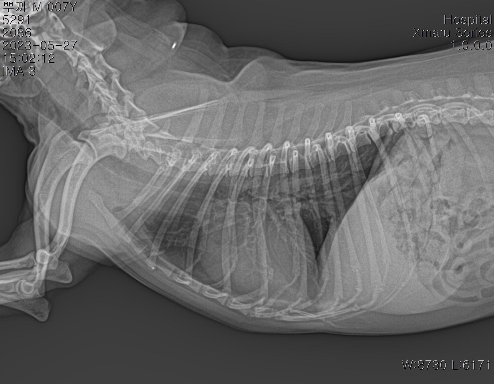

- 뿌까 건강검진 내역- 2023년 05월 27일 토요일
- (05.20)예방접종 이후 식욕이 줄고, 걸음걸이가 느려짐
- 가만히 목을 쭉 뻗은 채로 서 있다가 떨고있음을 느낌
- 심장박동이 빠름을 느낌
- 05.26 노옐동물병원 방문, 노후화로 인한 심장병이 의심된다고 말씀하심. 예방접종으로 인한 증상은 아니라고 하심.
심장관련으로 비엔동물병원을 추천해주심. (후기에 바가지가 너무 심하다는 평들이 있어서, 긴급시에만 내원하고, 추천받은 병원으로 갈 예정)
- 05월28일 365 마음동물병원 방문
- 심장의 잡음이 들린다고 하심, 정확한 원인을 위한 종합검진이 필수라고 하심.(초음파, X레이, 혈액검사 진행)
- 결과 - 심장 판막질환
- 심장병 외로 증상없음
- 멍하게 서있는건 뇌의 문제로 예상(심장문제X)
- 신경문제 없음
담낭, 비장, 콩팥, 간 종양없음
쿠싱 없음
방광 깨끗
뼈 문제 없음
대처
- 심장의 잡음이 들린다고 하심, 정확한 원인을 위한 종합검진이 필수라고 하심.(초음파, X레이, 혈액검사) 폐에 압력을 주면 물이 찰 수 있기때문에, 절대로 흥분하면 안된다고 한다
- 산책금지(아주 약하게, 안고다니기)
- 미용은 집에서 스트레스안받게 할것
- 단백질 섭취금지, 고기 먹이지 말것 - 사료만 먹이기
- 콩팥을 조심해야함, 콩팥수치가 높아지면 다른 질병 유발할 수 있음
- 판관질환은 치료가 어렵기때문에 현재 현상을 늦추고, 콩팥수치를 확인하면서 약 제조하는것
- 2주치 심장약 받아옴
검사지
X-ray 사진
